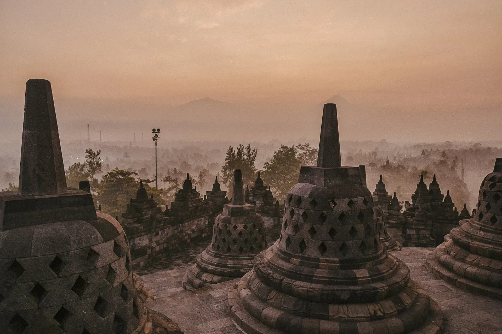

Java: Borobudur, Prambanan y la corte de Yogyakarta
En el centro de Java se levantó, entre los siglos VIII y IX, el mayor templo budista del mundo. Borobudur se vive con acceso privado al amanecer, cuando la niebla cubre todavía el valle de Kedu y los volcanes Merapi y Merbabu asoman en el horizonte, o desde un globo aerostático, desde donde su planta se revela como un mandala. A poca distancia están los templos hindúes de Prambanan y, en Yogyakarta, la corte de los sultanes: el Taman Sari, su palacio de agua del siglo XVIII, recorrido fuera del horario de apertura, y el wayang beber, la forma de narración pintada más antigua de Java, en una función privada. Si el viaje continúa hacia el este, los volcanes Bromo e Ijen ponen el contrapunto natural.
- Borobudur con acceso privado al amanecer
- El Taman Sari fuera del horario de apertura
- Función privada de wayang beber en Yogyakarta
CuándoDe abril a octubre, estación seca.